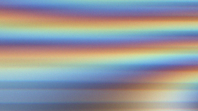

Moon Blink
Rainer Kohlberger – AT/D 2015
10 min – no dialogues
Sc+DoP+P: Rainer Kohlberger – S: Sixpack
Best European Short / New Horizon Festival Wroclaw 2015 / PL
"The work 'quotes' the external world of early experimental film – the samples illustrated on the table ¬similar to the inner world of physical appearances – apparitions of color, fields of energy, light and sound noise. Then again and in other words, what we see is first and foremost the unfolding of mathematical driving forces conforming to patterns similar to natural logic. Kohlberger’s algorithmically generated and dynamic world loves demonstrating its infinite potential for mutation by way of graphically visual and acoustic excess, sensuous overspending and mental noise, just as much as it enjoys illustrating its aesthetic calculus and veiled order." –
Marc Ries, Translation: Eve Heller
tuesday 13 oct 10.30 pm werkstattkino
Rainer Kohlberger (1982, Linz) is an Austrian born Freelance Visual Artist living in Berlin. His work is primarily based on algorithmically generated graphics that are exposed in live performances, installations and mobile apps. For his work FIELD he won the ZKM App Art Award for artistic innovation. He received the Crossing Europe Local Artist Award 2013 for his work HUMMING, FAST AND SLOW.
Films (selection) White Light/White Heat (2012) – Humming, fast and slow (2013)